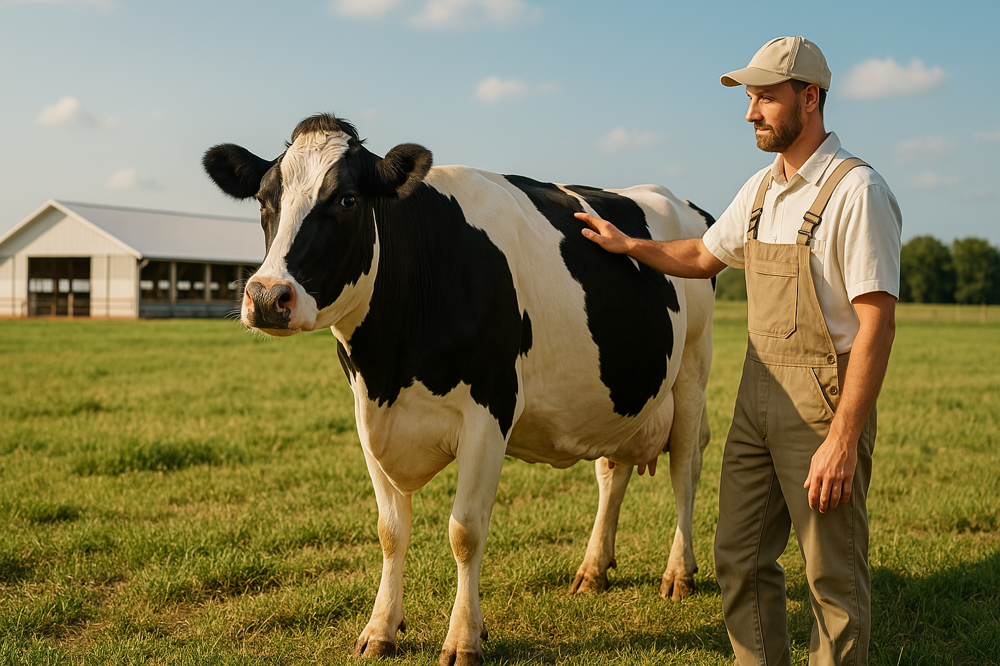

Holstein Irkının Özellikleri
Holstein sığırları, yüksek süt verimi ile bilinen en popüler sütçü ırklardan biridir. Doğru bakım ve beslenme ile yıllık 10.000 litrenin üzerinde süt verimi sağlanabilir.
Beslenme İpuçları
Yüksek verimli Holstein ineklerinin enerji, protein, mineral ve vitamin ihtiyaçları dengeli şekilde karşılanmalıdır. Rasyonlar, kaliteli kaba yem ve konsantre yem karışımlarından oluşmalıdır.
Laktasyon dönemine göre yem içeriği ayarlanmalı, özellikle doğum sonrası enerji açığı önlenmelidir.
Bakımda Dikkat Edilecekler
Temiz ve konforlu barınaklar, düzenli sağım, ayak bakımı ve aşılama programları Holstein sürülerinde verimliliği artırır.
Isı stresi, mastitis ve metabolik hastalıklar gibi sorunlara karşı önleyici tedbirler alınmalıdır.
Doğru bakım ve beslenme ile Holstein ineklerinden maksimum verim almak mümkündür.